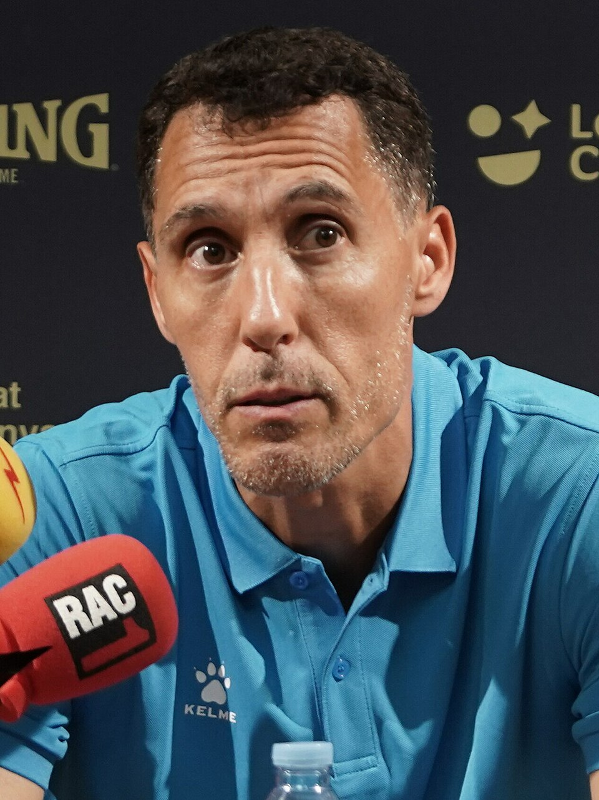

Básquetbol
ORIGEN:
Club Sportivo 9 de Julio
Pablo Prigioni
Base Armador · Estratega FIBA / NBA
Iniciado en las divisiones formativas de Club Sportivo 9 de Julio. Medallista de Bronce en los Juegos Olímpicos de Pekín 2008 con la Generación Dorada, disputó 4 temporadas en la NBA (New York Knicks, Houston Rockets, LA Clippers), multicampeón con Baskonia en España y actual entrenador principal de la Selección Argentina Masculina Mayor.
Consagración Cumbre
Bronce Pekín 2008 · Ex NBA · DT Selección
2000s - Presente